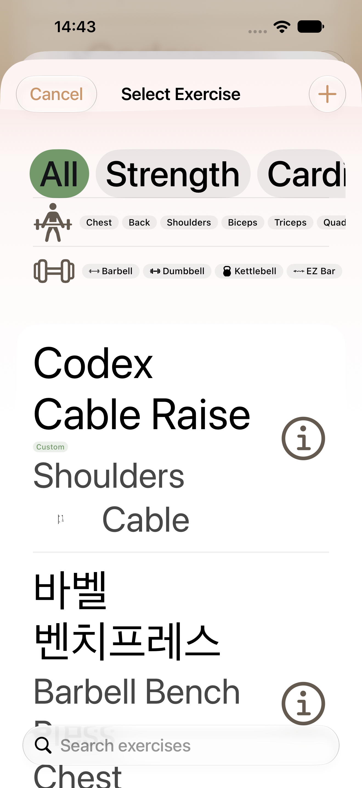
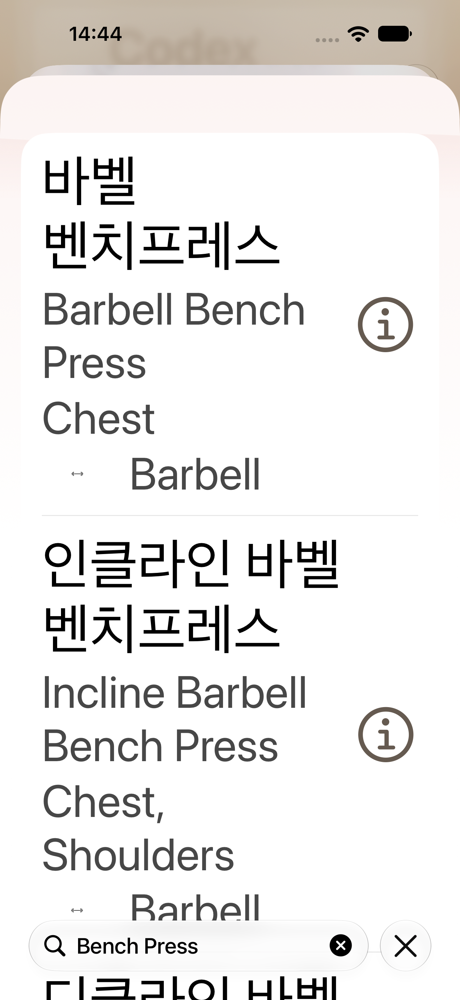
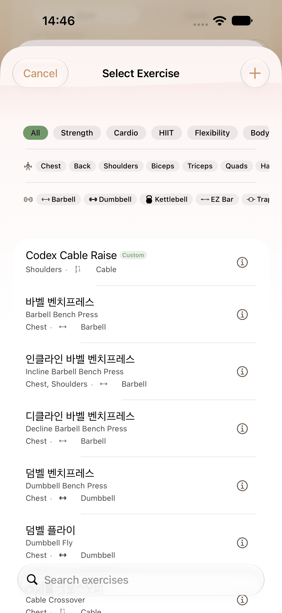
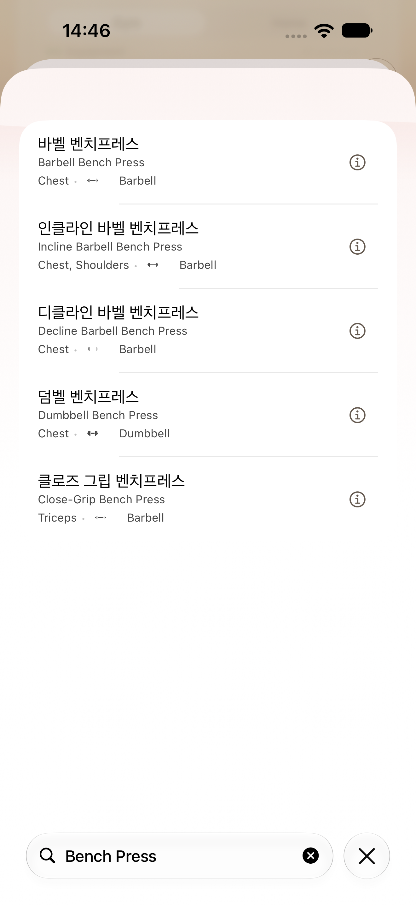
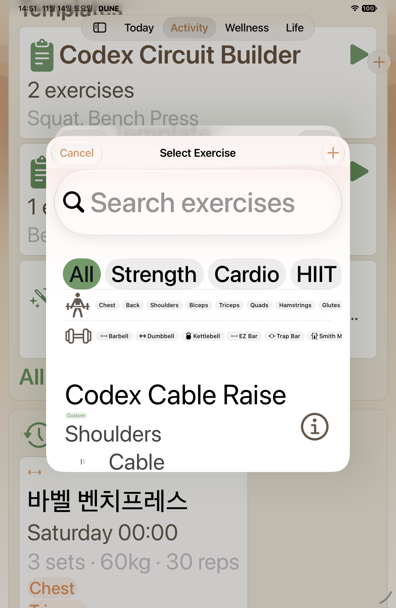
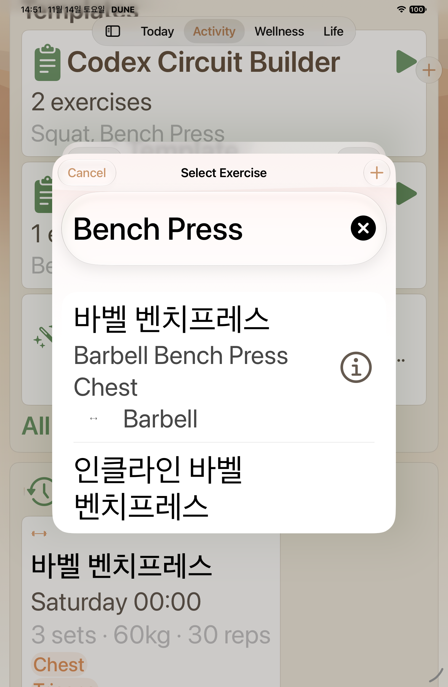
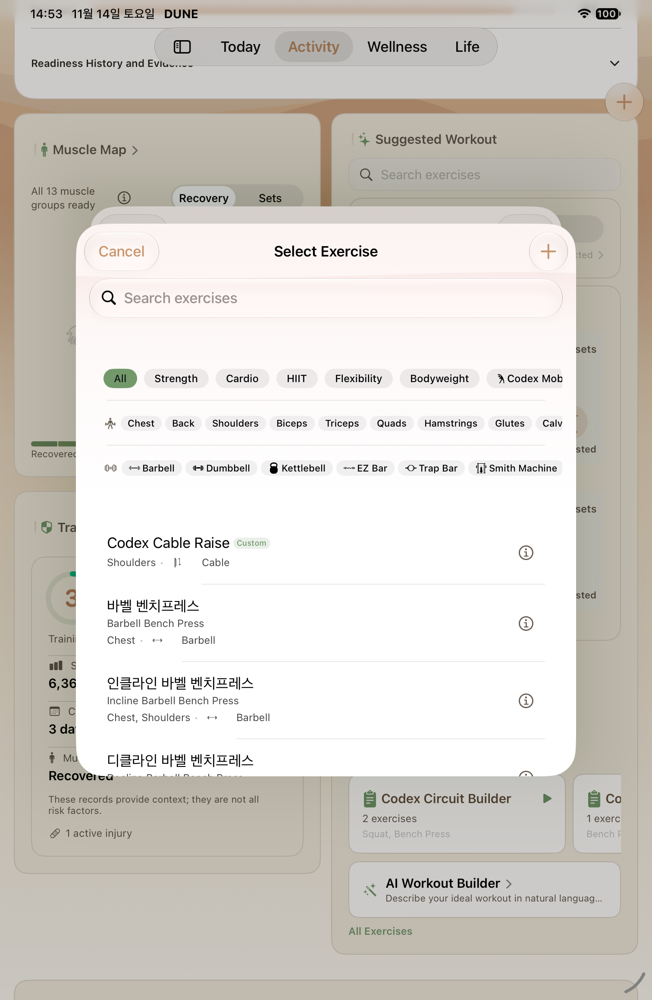
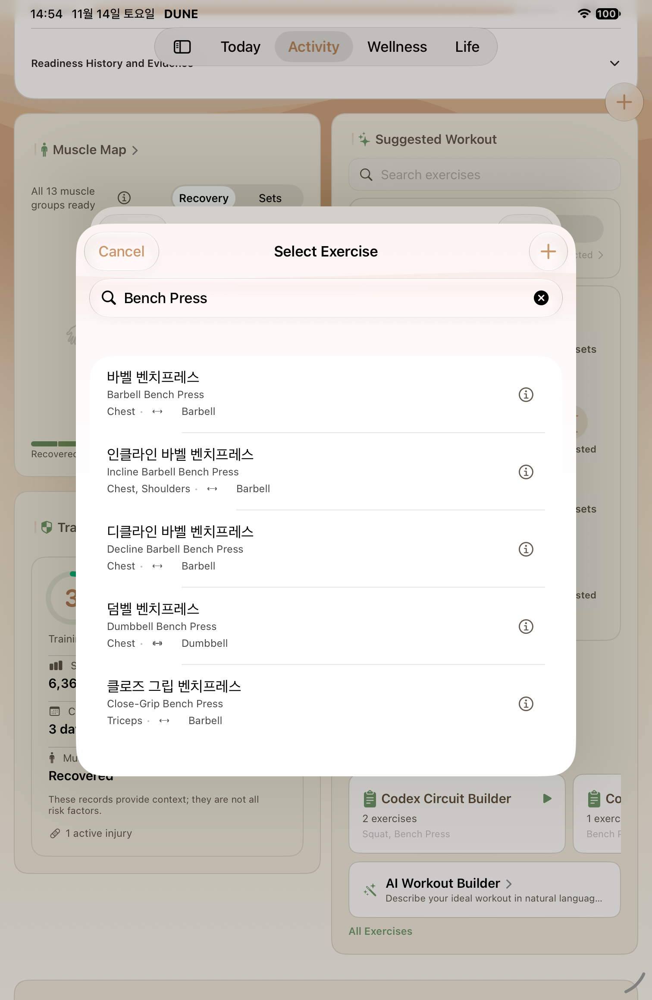

W14 fresh Phone and iPad capture
2026-11-14, source e965597a6a982a2f267df77ec84f506a350b7555, selected normal and MAX authoring selectors passed on both devices.

phone-max — template exercise picker initial

phone-max — seeded Bench Press selection

phone-normal — template exercise picker initial

phone-normal — seeded Bench Press selection

ipad-max — template exercise picker initial

ipad-max — seeded Bench Press selection

ipad-normal — template exercise picker initial

ipad-normal — seeded Bench Press selection